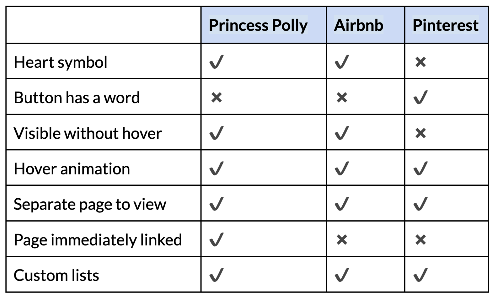
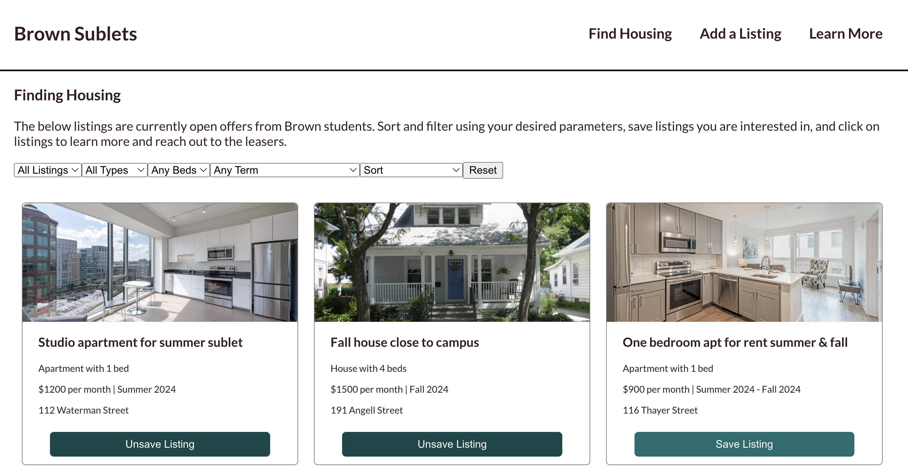

This project served as an opportunity to both conduct competitive analysis in design elements and use a reactive frontend framework to build an interactive interface. My site uses React to develop a list-based interface for a mocked housing subletting site.
Competitive Analysis
Our first goal was to conduct competitive analysis on sites with a
favoriting function. I chose three:

For Princess Polly, I appreciated that the favorites page was easy to
find, and could be accessed immediately from where the items were.
However, I was unsure about the heart symbol itself– it’s not very
immediately obvious and easy to click due to its size and thinness,
and I think some ease of use and accessibility was sacrificed for the
sake of aesthetics on this site. For Airbnb, the heart itself
definitely has better contrast and visibility, but I’m still unsure
how accessible it is for all users; while it is definitely a fairly
widespread indicator of “favorited” or “liked” on online platforms, I
do think that there is potential for confusion and difficulty for
users that are less familiar or able to navigate sites as easily. I
did appreciate the custom lists that automatically saved to the same
lists when on the same search, as that feels like a good intermediate
between custom lists and ease of use. For Pinterest, I appreciated the
button having the word “save” on it rather than the heart symbol.
However, I wasn’t a fan of how difficult it was to navigate to the
page where it was saved, and that users had to hover in order to be
able to view the save functionality.
Using this as a baseline, I knew that I wanted to the button for
saving to be clearly labeled with a word, and visible without hovering
over the item. Additionally, I wanted the list to be easily accessible
without needing complex navigation. I also appreciated the hover
animation for the three sites, and though I find value in the custom
lists, I think that is outside the scope of this project.
Site Design
With a more clear design vision, I chose to create a mock Brown subletting site, something my friends and I had been in discussion about the need for. My intention was to create a site where users could search through (hypothetically uploaded) housing options based on various parameters. The sort features allow the default order or price sorting, while the filters allow users to choose parameters such as number of beds, type of housing, or the term they want to sublet for. Finally, there is a saved listing aggregator, which tracks what listings the user saves.
Using components, props, and states, my interface allows for full functioanlity. Users are fully able to sort, aggregate, and filter the housing data provided with a dropdown menu for each parameter.
Reflections and Future Goals
Overall, this project encouraged me to take on new challenges in using reactive design components, and carefully consider the various forms that simple features like sorting or filtering or favoriting can take. I loved learning how to combine aesthetic design components with interactive interfaces. If I chose to implement this site beyond just the mocked front-end, future steps would include implementing my back end, ensuring security and authentification measures, integrating a map API, and creating a secure and anonymous email function. Either way, this project was a valuable experience in using reactive frontend frameworks to create more dynamic sites, and I'm looking forward to using these skills as I continue to create and improve.